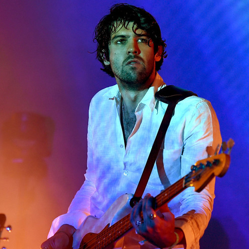

ABOUT | DISCOGRAPHY | FOOTAGE | SUBSCRIBE
About
.jpg)
Tame Impala is a psychedelic music project of Australian multi-instrumentalist Kevin Parker. In the recording studio, Parker writes, records, performs, and produces all of the project's music. As a touring act, Tame Impala consists of Parker (guitar, vocals), Dominic Simper (guitar, synthesiser), Jay Watson (synthesiser, vocals, guitar), Cam Avery (bass guitar, vocals), and Julien Barbagallo (drums, vocals). The group has a close affiliation with fellow Australian psychedelic rock band Pond, sharing members and collaborators, including Nick Allbrook, formerly a live member of Tame Impala. Originally signed to Modular Recordings, Tame Impala is now signed to Interscope Records in the US, and Fiction Records in the UK. Parker originally conceived the project in Perth in 2007. After a series of singles and EPs, Tame Impala's debut studio album, Innerspeaker, was released in 2010; it was certified gold in Australia and well received by critics. Parker's 2012 follow-up, Lonerism, was also acclaimed, reaching platinum status in Australia and receiving a Grammy Award nomination for Best Alternative Music Album. Tame Impala's third album, Currents, was released in July 2015, and like its predecessor, it won ARIA Awards for Best Rock Album and Album of the Year. Parker won the APRA Award for Song of the Year 2016 for Currents' first track, "Let It Happen". The fourth and most recent studio album, The Slow Rush, was released 14 February 2020.
MEMBERS
Kevin Parker
Kevin Richard Parker (born 20 January 1986) is an Australian singer, songwriter, multi-instrumentalist and record producer, best known for his musical project Tame Impala, for which he writes, records, and produces the music. At the ARIA Music Awards of 2015 he won two awards, Engineer of the Year and Producer of the Year, for his work on Tame Impala's album Currents (2015). In addition to his work for Tame Impala, Parker was the drummer of Pond from 2009 until 2011. He remains their record producer, working with the band on the studio albums, Beard, Wives, Denim (2012), Hobo Rocket (2013), Man, It Feels Like Space Again (2015), The Weather (2017), and Tasmania (2019). As a producer, Parker has collaborated with artists such as Mark Ronson, Lady Gaga, Kanye West, Travis Scott, Melody's Echo Chamber and The Flaming Lips.
Jay Watson
Jay Watson (born 27 May 1990) is an Australian multi-instrumentalist, singer and songwriter. He is best known as a member of the psychedelic rock bands Tame Impala and Pond. Watson records solo material under the name GUM and has released four albums under this name.
Dominic Simper
Dominic Simper was bornon January 2, 1986 in Perth, Australia. Guitarist and synth player known for being a member of the band Tame Impala. He originally played bass for the band from 2007 to 2010.
Julien Barbagallo
Julien Barbagallo is a French singer, songwriter, drummer, and backup vocalist who has a rich tapestry with musical footnotes. His mind-blowing skills as a drummer are what sent him soaring through the skies and landed him a place with several mesmerizing bands like Tame Impala, Tahiti 80, Hyperclean, and Aquaserge. His profound skills also helped the band Tame Impala produce several hit albums such as Lonerism (2012), Currents (2015), and the live album Live Versions (2014). Apart from touring with the famed, he is also an incredible singer and songwriter who has released several hit album of his own such as Amor de Lonh (2015), Grand Chien (2016), and Danse Dans Les Ailleurs (2018).

Cam Avery
Cameron Avery (born 21 April 1988) is an Australian multi-instrumentalist, musician, singer and songwriter. He is best known as a member of the bands Pond and Tame Impala, and as the frontman for The Growl.


1333 Tanglewood Road
Jackson, MS 39201
(123) 456-7890
***For Educational Purposes Only***